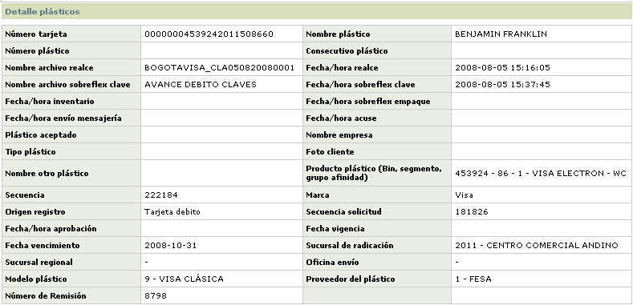

Pl�sticos en control de inventario |
Mediante esta funci�n se habilita la selecci�n de aquellos pl�sticos que durante el proceso de las diferentes solicitudes arriban a la etapa de control de inventario con el fin de poder asociar a cada tarjeta el n�mero del pl�stico en el cual se hizo el realce de la misma.
Al ingresar a la opci�n, el
usuario se encuentra con un wizard de tres pasos en el que la primera p�gina
corresponde a un filtro en el cual es necesario diligenciar al menos un criterio
que permita determinar las tarjetas a las cuales se les desea aplicar el control
de inventario. Este formulario permite ejecutar manualmente el proceso de
ingreso del n�mero de pl�stico para cada una de las tarjetas,
aunque tambi�n el sistema cuenta con la opci�n de Cargue
de archivo de inventario, desde donde el proceso se puede realizar
masivamente a partir del archivo de realce entregado inicialmente al proveedor.
Descripci�n de campos
N�mero tarjeta |
Campo alfanum�rico de hasta 23 posiciones en el que se puede ingresar el n�mero de alguna tarjeta en particular que se desee consultar para aplicarle el control de inventario |
Nombre pl�stico |
En este campo se ingresa como criterio para la consulta el nombre del cliente tal y como aparece realzado en el pl�stico al cual se desea aplicar el control de inventario |
Producto plástico |
Campo con lista de valores de la que se puede seleccionar el producto al cual pertenecen los plásticos que se desea consultar para aplicarles el control de inventario |
Marca |
En este campo con lista de valores, se selecciona seg�n el caso la marca asociada con los productos a los que pertenecen los pl�sticos que se desea consultar para aplicarles el control de inventario. |
Origen |
Campo tipo combo en el cual se selecciona el evento que dió origen a la solicitud de los plásticos que se desea consultar para aplicarles el control de inventario. Las opciones contenidas en este combo son Crédito empresarial corporativo, Crédito convenio, Renovación individual crédito, Renovación masiva crédito, Reexpedición crédito, Crédito normal, Tarjeta débito, Cambio masivo de productos cródito, Recordatorio sobreflex de clave, Reposición, Reactivación, Renovación masiva débito, Reexpedición débito, Renovación débito, Reposición débito y Renovación masiva débito. |
Solicitud |
En este campo numúrico se puede ingresar el número de la solicitud específica para la cual se desean consultar los plásticos para aplicarles el control de inventario. |
Modelo plástico |
Campo
con lista de valores que permite seleccionar el modelo
de plástico asociado con las tarjetas para
las cuales se desea consultar y ejecutar el proceso de aplicación
del control de inventario. |
Una vez seleccionados los criterios y al desplazarse a la segunda página del wizard, se muestran todos los registros que cumplen con las condiciones indicadas por el usuario mostrando para cada uno de ellos el número de tarjeta, el nombre plástico, el número del plástico asignado (en el caso de haber hecho uso de la opción cargue de archivo de inventario) y un campo para marcar aquellos registros específicos para los que se quiera aplicar manualmente el control de inventario en caso que el usuario no desee ejecutar la acción para todos los registros desplegados por los filtros.
Es de aclarar, que en el caso que las tarjetas desplegadas correspondan a tipo débito generadas masivamente, el campo Nombre plástico se mostrar en blanco.
Esta segunda página del wizard cuenta con la opción Detalle, que le permite al usuario invocar un nuevo formulario con la información completa del registro seleccionado y adicionalmente contiene un bot�n especial que le permite a la entidad aplicar el control de inventario para la totalidad de los registros desplegados.
En la tercera página del wizard, se muestran los registros que el usuario haya seleccionado para ejecutar el proceso de control de inventario, en caso que éste no se vaya a aplicar para todos los registros desplegado en la segunda página y despuús de diligenciar manualmente el campo Número plástico para aquellos registros a los cuales no se les haya adicionado este dato, mediante el botón finalizar se ordena la aplicación del inventario; al igual que la segunda página del wizard este formulario también contiene el hipervínculo Detalle.
La casilla remover le permite al usuario marcar aquellos registros que había seleccionado previamente pero que por alguna razón ya no desea incluir para aplicarles el control de inventario.
Descripción de campos
N�mero plástico |
Campo obligatorio en el cual se puede ingresar el número preimpreso en cada plástico a manera de consecutivo y que permite identificar en el inventario a que número de tarjeta se encuentra asociado. |

Descripción de campos
N�mero tarjeta |
Campo en el que se despliega el número de tarjeta para el cual se está consultando la información. |
Nombre plástico |
En este campo se muestra el nombre del cliente titular de la tarjeta tal y como aparece realzado en el plástico. |
Número plástico |
Campo que contiene el consecutivo que identifica el plástico utilizado durante el proceso de embosado o realce de la tarjeta. |
Consecutivo plástico |
Campo que contiene el consecutivo que identifica el registro asociado a la tarjeta dentro del archivo de realce. |
Nombre archivo realce |
Despliega el nombre del archivo de realce dentro del cual se incluyé el registro correspondiente al plástico asociado al número de tarjeta. |
Fecha / hora realce |
Indica la fecha y hora en la cual se generó el archivo de realce en el cual se encuentra contenida la tarjeta consultada. |
Archivo sobreflex de clave |
Despliega el nombre del archivo de sobreflex de clave dentro del cual se incluyó el registro correspondiente a la información del PIN o clave de la tarjeta. |
Fecha / hora sobreflex de clave |
Campo que contiene la fecha y hora en la que se generá el archivo mediante el que se genera el sobreflex con el PIN o clave que permite al cliente el uso del plástico. |
Fecha / hora inventario |
Muestra la fecha y hora en la cual se aplicó el control de inventario a la tarjeta y mediante la cual se le asignó a la tarjeta el número de plástico respectivo. |
Fecha / hora sobreflex de empaque |
Campo que contiene la fecha y hora en la que se generá el archivo mediante el que se imprimen los sobres de seguridad en los cuales son empacados los plásticos para ser enviados al cliente. |
Fecha / hora envío mensajería |
Este campo muestra la fecha y hora en la que se generá el archivo con el cual se enviá a la empresa de mensajería el plástico realzado con el fin de ser entregado al cliente. |
Fecha / hora acuse |
Campo que muestra la fecha y hora en la cual se registró en el sistema la aceptación o rechazo del plástico por parte del cliente. |
Plástico aceptado |
En este campo se indica Si o No el cliente aceptó el plástico realzado y enviado por la entidad financiera. |
Nombre empresa |
Para el caso de tarjetas de productos empresariales, en este campo se muestra el nombre de la empresa a la cual se le aprobó la obligación por parte de la entidad. |
Tipo plástico |
Campo que indica si el plástico asociado con la tarjeta consultada corresponde a un Plástico principal es decir, a la materialización del crédito otorgado, u Otro plástico en caso de aquellos plásticos secundarios o accesorios que de acuerdo con lo definido en el producto se entregan adicionalmente a la tarjeta propiamente dicha y que sirven para formalizar extensión de beneficios o un trato preferencial a los titulares de los mismos. |
Foto cliente |
Indica si de acuerdo con los parámetros del producto y las características del modelo de plástico asociado, el plástico lleva impresa o no la fotografía del cliente. |
Nombre otro plástico |
Cuando en el campo Tipo plástico se indica que el registro corresponde a Otro plástico, en este campo se muestra la descripción o nombre del mismo. |
Producto plástico |
En este campo se muestra el bin, segmento, grupo de afinidad y descripción del producto al que pertenece la tarjeta. |
Secuencia |
Campo
que muestra la secuencia asignada internamente por el sistema y de
manera automática a cada uno de los plásticos que ingresan
a la etapa de realce, lo que permite diferenciarlo de los demás. |
Marca |
En este campo se despliega la marca asociada con el producto al que pertenece el plástico del cual se está consultando el detalle. |
Origen registro |
Este campo muestra el evento que dió origen a la solicitud de los plásticos que se desea consultar para realce. Las opciones contenidas en este combo son Crédito empresarial corporativo, Crédito convenio, Renovación individual crédito, Renovación masiva crédito, Reexpedición crédito, Crédito normal, Tarjeta débito, Cambio masivo de productos crédito, Recordatorio sobreflex de clave, Reposición, Reactivación, Renovación masiva débito, Reexpedición débito, Renovación débito, Reposición débito y Renovación masiva débito. |
Secuencia solicitud |
Campo que contiene el número o secuencia de la solicitud a la cual se encuentra asociado el plástico actual. |
Fecha / hora aprobaci�n |
Campo que contiene la fecha y hora en la cual se aprob� la solicitud mediante la cual se incluy� el registro en la etapa de pl�sticos correspondiente (realce o sobreflex de clave). |
Fecha vigencia |
En este campo se muestra la fecha a partir de la cual tiene vigencia el pl�stico del cual se est� consultando el detalle. |
Fecha vencimiento |
Campo que contiene la fecha hasta la cual tiene vigencia o validez el pl�stico de acuerdo con lo parametrizado para el producto al que pertenece. |
Sucursal radicaci�n |
En este campo se muestra el c�digo de la sucursal ante la cual se encuentra radicada la obligaci�n que origina la generaci�n del pl�stico. |
Sucursal regional |
Campo en el que se despliega la c�digo de la sucursal a la cual se encuentra adscrita o pertence la obligaci�n. |
Oficina env�o |
En este campo se muestra el c�digo de la sucursal de la entidad a la que se va a enviar el pl�stico |
Modelo pl�stico |
Campo
que muestra el modelo
de pl�stico a utilizar para elaborar el realce
o embozado de la tarjeta. |
Proveedor pl�stico |
Este campo muestra el nombre del proveedor encargado de suministrar el pl�stico en el cual se va a efectuar el realce de la tarjeta. |
Número remisión |
Despliega el número de documento con el cual se remisionaron los plásticos durante el proceso de realce que se hace desde esta misma opción. |
Botones especiales
Aplicar inventario : si desde la primera p�gina del wizard el actor invoca el bot�n Aplicar inventario, se ejecuta el proceso mediante el cual se actualiza la base de datos con la informaci�n del n�mero de pl�stico asociados con cada uno de los registros consultados.